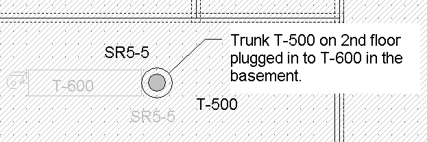

Duct Drawing Techniques |
  
|
Duct Drawing Techniques |
|
Watch Video Tutorials at elitesoft.com
Floor to Floor Duct Connections
It is possible to connect a trunk or runout to an upstream trunk on another floor (assuming you have drawn the multiple story floor plan using the Sheet feature, where each floor is on a different Sheet).
1.Set the current Sheet to the one where you will be drawing the new downstream duct.
2.On the Sheets tab of the Drawing Properties dialog, set the Sheet with the upstream duct to be "Visible and grayed" when that Sheet is not active.
3.Drag and drop the new trunk or runout onto the drawing and plug it in to the upstream trunk as usual. Even though the upstream duct is on another sheet it will accept the other duct being plugged in.
4.Be sure and set the Additional Length property on the Special tab of the Object Properties window to account for any vertical rise or drop that is not represented in plan view. The Length property is automatically calculated from the two dimensional plan view of the duct object, so you need to also set the Additional Length property in order to accurately represent the fact that the duct is installed at least somewhat vertically.
5.If you have a duct that runs vertically through more than one floor, you can represent the vertical duct by a single trunk with zero length on the highest floor. For example, if you have a trunk that runs from the basement to the second floor, you can add a duct to the second floor (we'll call it T-500) and position it so that it plugs in to the upstream trunk in the basement. Then resize T-500 so that its junction fitting end is positioned in the same place as its own upstream end (it will look like just a small circle inside a large circle, as pictured below).. The Length property would read zero, but you would then override that by entering, say, 10 feet for the Length. Then you can plug any other downstream ducts on the second floor into T-500.
